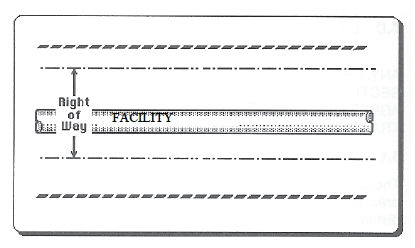
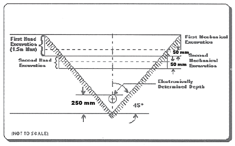

Any changes to the limitations shown in this section must be written into the crossing agreement and clearly pointed out to the contractor.
The controlled area may also be referred to as the safety zone. For pipelines the controlled area is 30m either side of the centerline of the pipeline as defined by the AER (known as the prescribed area for NEB regulated pipelines). The owner must be notified of intent to cause a ground disturbance within this area.

For other buried facilities the hand expose zone can vary from 1m to 5m. It is important to reference the appropriate regulations such as the Alberta Occupational Health and Safety Code or the Alberta Electrical and Communication Utility Code.
The right of way/easement has specified boundaries within which the owner has a right to construct a facility anywhere. A written agreement must be in place, the owner must be given at least 48 hours notice, and the facility hand exposed before work can commence within the right of way (or within 5m of the pipeline). The owner’s representative must be on site when work commences within the right of way/easement.
4.3.1 If a contractor plans to disturb the ground within the Control Area/Prescribed Area but outside the right of way with machinery (in the shaded area in the figure below), then:
- A written agreement may be required.
- The location of the facility must be marked.
- The location of the boundaries of the right of way should be marked.
- Temporary fencing may be specified at the owner’s discretion to protect the facility along the right of way––especially if the proposed ground disturbance will run parallel to the existing facility.

4.3.2 If the ground disturbance is within the right of way (as shown below).
- A written agreement is required.
- The facility must be located and marked.
- The facility must be hand exposed before digging within 5 meters of the facility.
- Machinery must not be used to dig within 600mm of either side of the exposed pipe or within any distance beneath the pipeline unless under the direct supervision of a representative of the facility owner.
| NOTE: | These are the minimum distances as per the Alberta Pipeline Rules. Because of the nature of the crossing or the contents of the facility, some owners may require that machinery is kept further away than these minimums. |
Ramps and/or matting may be specified by the facility owner. The pipeline company shall provide guidance on acceptable methods of crossing the pipeline. Larger diameter pipes are more prone to distortion or damage by rock impact. There must be a minimum of 1.5m (or as specified by the owner) of cover over vulnerable pipelines before heavy equipment can cross. If the cover is less than the specified minimum, a ramp and/or matting must be installed and maintained.
Equipment crossings must be confined to the use of the ramp and/or matting. The ramp and/or matting could extend from boundary to boundary of the right of way on either side of the pipeline or as specified by the pipeline owner.
NOTE: When removing the ramp, ensure that the pipeline remains protected from heavy equipment.
Foreign structures crossing over or under an existing facility must maintain a minimum clearance of 300mm as shown below, or as directed by the facility owner. Written approval is required for exceptions.
The facility owner must have at least 24 hours notice to arrange an inspection of the exposed pipe before it is backfilled.
An existing facility need not be exposed where it has been located and marked in accordance with 6.1 and 6.2 of this guide; and
- Hand excavation is used for a distance of 5m on either side of the located and marked centre line of the existing facility to a depth which is 300mm deeper than the depth of the intended service; or
- Its position has been verified to the satisfaction of the permittee or licensee by comparison with recorded measurements of the facility taken during a previous exposure.

It is recognized that the hand excavation required when a ground disturbance is intended to be carried out within 5m of a facility is not practicable when the depth of cover over the facility is more than 1.5 m. It is acceptable to use the procedure outlined below, which allows for part of the excavation to be carried out by mechanical means. The procedure is designed to satisfy the general safety requirements for excavation of deep trenches.
| Step 1 | Alignment of the facility to be exposed must be established and marked at 3m intervals. |
| Step 2 | The estimated depth of the facility must be determined. |
| Step 3 | Hand dig a 1.5m deep trench at a right angle to the facility. The length of the trench is to be equal to twice the determined depth of the facility, plus an additional 0.25m. The trench is to be centered across the alignment of the facility (see Figure 1). |
| Step 4 | If the first hand excavation does not intercept the facility, then mechanical excavation of the material covering the facility is permitted to a depth of 0.5m less than the depth of the trench. The mechanically excavated area is to be in the shape of a square, and is to be centered around the hand dug trench with a length and width that are each twice the determined depth of the facility, plus an additional 0.25m (see Figure 1). |
| Step 5 | The next step is to deepen the trench by hand 1m more, while reducing the length by 1m. After the trench is completed, mechanical excavation can be made to a depth that is 0.5m less than the depth of the hand-dug trench. The length and width of the square mechanically excavated area shall also be decreased by 1m. (see Figure 2). |
| Step 6 | Repeat the procedure from step 5, and each time reduce the length of the hand-dug trench and the length and width of the mechanically excavated area by 1m until the facility is located (see Figure 2). |
Figure 1
Figure 2

Excavation techniques have been developed using water or air jets with a vacuum hose to expose buried facilities.
See Section 1.2 Causes and Prevention of Damage to Buried Facilities for related information.
Part 32 Section 448 of the OH&S Code states “any non- destructive technique used as an alternative must be acceptable to the owner of buried facility”.
For further information see the OH&S Code Explanation Guide and contact the facility owner for specific requirements.
Where a pipeline is to be exposed by its licensee, the licensee may make application to the AER for approval to use excavation procedures not specifically allowed in the Pipeline Regulation. The application should describe the process, by reference to diagrams if necessary, and indicate why the licensee believes it to be a safe method of excavation.